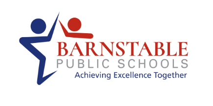

Core support for all students
High-quality instruction, schoolwide expectations, DCAP/SCAP accommodations, UDL, PBIS, and regular data review.

Internal working draft
Barnstable Public Schools MTSS
We are committed to a PK-12 district where our integrated system of comprehensive support consistently facilitates the early identification of student needs. This approach, guided by ongoing data analysis, provides targeted interventions that accelerate progress and cultivate a culture of continuous improvement for every child.
Shared system across grade bands
Access pathways: screening and referral
Week review cycles for most supports
Open Architect planned as intervention warehouse
System model
MTSS is a data-driven prevention, early detection, and support system. It strengthens Tier 1 while matching additional support to student need.
High-quality instruction, schoolwide expectations, DCAP/SCAP accommodations, UDL, PBIS, and regular data review.
Supplemental, skill-focused intervention matched to a diagnosed need and monitored at least every two weeks.
More intensive intervention, increased monitoring, and team review when students need support beyond Tier 2.
Student support process
All students begin the year with universal screening. The MTSS team reviews screening data, determines which students need additional diagnostics, and places students into intervention within three weeks when data indicate need.
All students complete required screeners. For early literacy, STAR Reading is the primary universal screener.
MTSS teams review screener results and identify students who need diagnostics to clarify the precise need.
Students with confirmed needs are matched to intervention, progress monitoring is assigned, and the plan is documented.
MTSS teams review PM data and other available data streams to continue, adjust, intensify, or exit supports.
At the beginning of the year, administer universal screeners to all students, compile benchmark data, and check Tier 1 effectiveness.
Use targeted diagnostics when needed to identify the specific skill, behavior, language-access, or social-emotional need.
Within three weeks of screening, match students with confirmed needs to intervention, assign the provider, set dosage, and define progress monitoring.
Referral is available year-round for needs that emerge between screening windows. It should not replace proactive screening.
Review attempted supports, continue data collection, and prepare a focused student support meeting.
Determine next steps, document the plan, notify families, and set the reconvene date. After placement, review progress-monitoring data monthly.
Intervention catalog
Filter by domain, grade band, and tier. Items marked “under review” need committee approval or additional team guidance.
STAR Reading is the primary universal screener. CBMs clarify the target skill, and CKLA ARG is the first-look resource for coherent support.
Skill-focused groups for coping, regulation, social problem solving, peer relationships, and belonging. Recommended cycle: 6-8 weeks.
Mentoring groups, social skills groups, CICO, restorative modules, adapted scheduling, grief groups, and intensive referral pathways.
Restorative circles, community mentors, SAC counseling, PASS, student support plans, Bridge, ACE, Project Excel, and BIP supports.
Early literacy
Early literacy intervention should accelerate students toward grade-level reading while keeping the student experience coherent with CKLA Tier 1 instruction.
At the beginning of the year, all K-3 students take STAR Reading. STAR is the primary universal screener and the first system-level signal that a student may need additional review.
The MTSS team reviews STAR data, determines which students need additional diagnostics, and places students into intervention within three weeks when data indicate need.
After intervention begins, the MTSS team meets monthly to review progress-monitoring data and all other available streams, including classroom performance, attendance, behavior, and teacher input.
Use STAR first, then prescribe LSF for letter-sound needs and PSF for phonemic-awareness needs when early literacy risk appears.
Use STAR first, then prescribe ORF as the default progress-monitoring tool. Add a skill-aligned CBM when the intervention target is below connected-text fluency.
Draft guidance: two consecutive data points in the blue range on the relevant progress-monitoring measure, plus team review of STAR and classroom performance.
Prescriptive draft guidance
The progress-monitoring measure should match the skill being taught closely enough to show whether the intervention is working. STAR is the universal screener; it is not the default Tier 2 progress-monitoring tool.
| Grade / Need | Primary CBM PM Tool | Use When | Team Decision Rule |
|---|---|---|---|
| Kindergarten: phonemic awareness | PSF - Phoneme Segmentation Fluency | The intervention targets segmentation, blending, deletion, substitution, or other phoneme-level work. | Review every two weeks. Continue, adjust, or intensify if PSF is flat or errors persist after two PM points. |
| Kindergarten: letter-sound knowledge | LSF - Letter Sound Fluency | The intervention targets sound-symbol correspondence, rapid letter recognition, or automatic recall. | Review every two weeks. Exit when LSF reaches the agreed benchmark and classroom evidence confirms transfer. |
| Grade 1: early decoding or phonics | NWF or taught-pattern decoding probe | The intervention targets CVC words, blends, digraphs, short vowels, or a specific phonics pattern before ORF is sensitive enough. | Use as the short-cycle measure, while also reviewing ORF when available. Shift primary PM to ORF once connected-text reading is the main target. |
| Grades 1-3: oral reading fluency | ORF - Oral Reading Fluency | The intervention targets accuracy, rate, phrasing, prosody, self-correction, or connected-text application. | ORF is the default PM measure for Grades 1-3. Review trend, accuracy, and error patterns monthly with the MTSS team. |
| Grades 2-3: advanced phonics or multisyllabic decoding | ORF plus taught-pattern decoding probe | The student reads connected text but errors show a specific decoding pattern that needs intervention. | Use ORF as the primary PM measure and the decoding probe as a secondary check until the pattern transfers to text. |
| Any grade: vocabulary or CKLA access support | Primary skill CBM plus brief CKLA access check | The 30 percent coherence block targets vocabulary, background knowledge, or language needed for upcoming CKLA work. | Do not use vocabulary checks alone as the PM tool. Pair them with the foundational-skill CBM named in the intervention plan. |
Each intervention record should name the baseline score, primary CBM PM tool, PM cadence, intervention target, provider, review date, and decision rule.
The MTSS team reviews PM trend, attendance, classroom performance, teacher input, and any relevant diagnostic data every month.
If the target skill changes, the PM tool should change too. Do not keep ORF as the only measure when the active target is PSF, LSF, or a specific decoding pattern.
Recommended practice
A coherent Tier 2 literacy lesson should answer two questions: What exact reading skill is limiting the student right now? What CKLA Tier 1 learning is coming next that this student needs help accessing?
Targeted foundational skill instruction
30%CKLA coherence and access support
Warm review: phonemic awareness, sound-symbol review, or previously taught word patterns.
Explicit skill work: model, guided practice, corrective feedback, and cumulative decoding or encoding.
Application: read or write words, sentences, or connected text aligned to the target skill.
CKLA access support: preteach vocabulary, preview concepts, build background knowledge, or rehearse discussion language.
Quick check: record response, note errors, and decide whether to reteach, continue, or adjust.
CKLA ARG should be the first-look Tier 2 resource because it preserves common language, routines, and sequence with Tier 1 CKLA instruction.
Students whose diagnosed need can be addressed through CKLA-aligned foundational skill practice, vocabulary previews, knowledge-building support, or remediation linked to current units.
Use the CBM that matches the ARG target: PSF for phonemic awareness, LSF for letter-sound knowledge, NWF or a taught-pattern decoding probe for phonics/decoding, and ORF for connected-text fluency in Grades 1-3.
Start with the student skill target, locate the matching ARG lesson or practice sequence, and pair it with upcoming CKLA vocabulary, concepts, or text demands.
UFLI Foundations is an explicit, systematic foundational skills program designed for primary core instruction or intervention with struggling readers in any grade.
Students who need structured decoding, encoding, phonics, irregular word, and connected-text practice beyond what the ARG sufficiently provides.
Use NWF or a taught-pattern decoding probe when the target is phonics or decoding. Use ORF as the primary PM tool once connected-text accuracy and fluency are the main intervention target.
Use its consistent lesson routine for phonemic awareness, visual and auditory drills, blending, new concept instruction, word work, irregular words, and connected text. Pair with CKLA access support during the 30 percent coherence block.
A focused phonemic-awareness sequence may be useful when diagnostics show PSF, blending, deletion, substitution, or phoneme-manipulation needs.
Students whose oral phonemic awareness is limiting access to decoding and spelling work.
Use PSF as the primary PM tool. If the student is also receiving letter-sound or decoding work, add LSF or a decoding probe as a secondary measure.
Keep the sequence brief, explicit, and connected to print whenever possible. Pair oral sound work with letters and CKLA words so the intervention does not become disconnected from reading.
SEL interventions
The SEL section is intentionally marked as a working draft. The assessment system, entry thresholds, and approved intervention list need further refinement.
Tier 1 includes universal SEL routines, PBIS, Morning Meeting, Responsive Classroom, Zones, Second Step, calm corners, and counselor access. Tier 2 centers on short-cycle skill groups, CICO, mentoring, coping strategies, and behavior support plans. Tier 3 may include BIP, 1:1 skill-building, safety planning, and intensive referral supports.
Tier 1 includes Advisory, relationship mapping, SOS in Grade 7, R.I.S.E. routines, peer mediation, and Hub access. Tier 2 includes mentoring groups, social skills groups, CICO, Pre-CRA, restorative modules, and grief groups. Tier 3 includes 1:1 mentoring, clinical services, PASS, safety plans, CRA, and referral pathways.
Tier 1 includes SOS lessons, Advisory, TST/Hawktime/Stable Time, Hope Squad, SCAP, Maia, and Hub access. Tier 2 includes restorative circles, mentors, chemical health education, PASS, SAC counseling, and student support plans. Tier 3 includes ACE, Project Excel, Bridge, BIP, safety planning, and clinical or community referrals.
Needs working-group input
This guidebook needs final guidance from the Data & Assessment working group on screening calendars, Open Architect setup, naming conventions, required fields, reporting windows, progress-monitoring expectations, and decision rules.
Needs working-group input
The MTSS site should include explicit guidance for multilingual learners so teams can distinguish language acquisition, access needs, Tier 1 scaffolds, and true intervention needs.
Team tools
Select the concern type to preview the recommended team starting point. This is a working-draft helper, not a final decision rule.